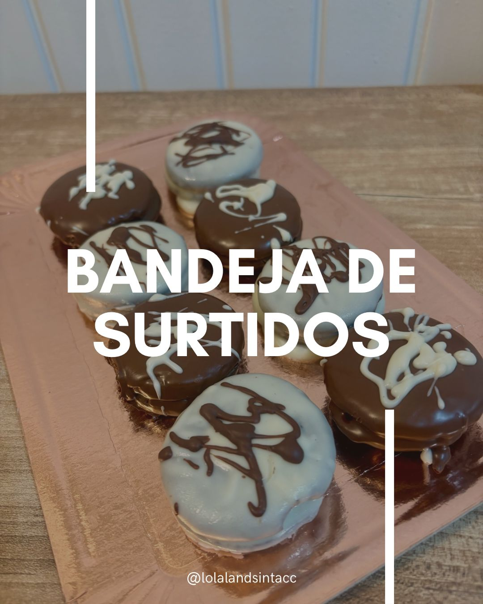
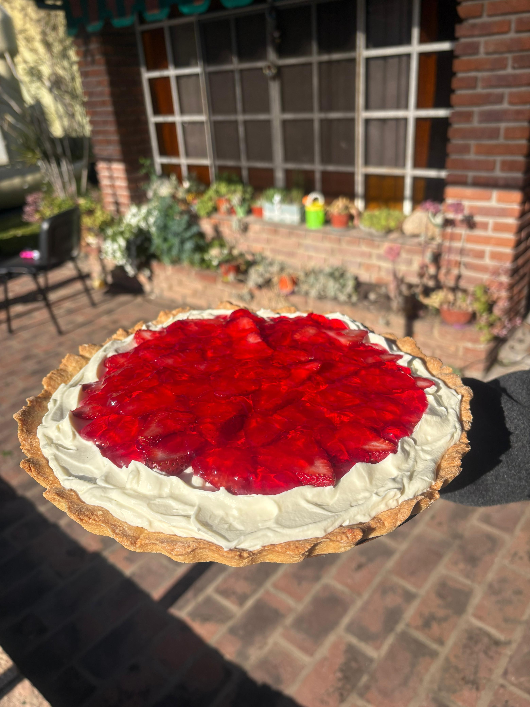

LolaLand Sin Tacc
Alfajores artesanales
Variedad de alfajores para saborear!
✨ Alfajores Caseros Los alfajores artesanales sin TACC ofrecen una experiencia de sabor tradicional y segura para personas celíacas, destacándose por sus texturas suaves y rellenos cremosos como el dulce de leche. Su preparación utiliza harinas sin gluten como la de arroz y almidón de maíz, garantizando un producto delicado que se desarma en la boca, ideal para desayunos, meriendas o como postre.
- Alfajores blancos
- Alfajores negros
- Alfajores craquelados
Tortas de frutilla
Descubri la especialidad de la casa!
🍓 Torta de Frutilla Casera Suave, fresca y hecha con amor. Una base esponjosa combinada con crema suave y frutillas seleccionadas que aportan un sabor natural y refrescante. Perfecta para cualquier ocasión: cumpleaños, reuniones o simplemente para darse un gusto. Preparada de manera artesanal, sin conservantes, con ingredientes de calidad que marcan la diferencia en cada bocado
- Torta pequeña de 16ml
- Torta grande de 26 ml
Preguntas mas frecuentes!